Camp Century R2 — narration-led preparation
60 briefs:24 referenced ImageGen illustrations,20 original document/photo treatments,16 data/logic diagrams. No generations. D07 source hold; exact core rediscovery date conflict held separately. The32beats/paragraph units have literal narration anchors; exact seconds remain AUDIO_TIMING_HOLD.
CH01
G01: A working city in shallow firn
Exact narration cue: working settlement · CC07-S4-CH01-B01
IMAGEGEN_REFERENCED_ILLUSTRATION · PREPARATION_READY_REFERENCES_REVIEWED_OUTPUT_NOT_GENERATED
One clear oblique cutaway through a compacted-snow trench. Show prefabricated occupied rooms beneath a corrugated arch, with a surface ramp. Match the actual ordinary rooms and arch proportions in the references. Show shallow buried construction, not a rock cavern, giant subterranean metropolis or natural ice cave. Explain material around the rooms, without drawing a complete invented site plan.
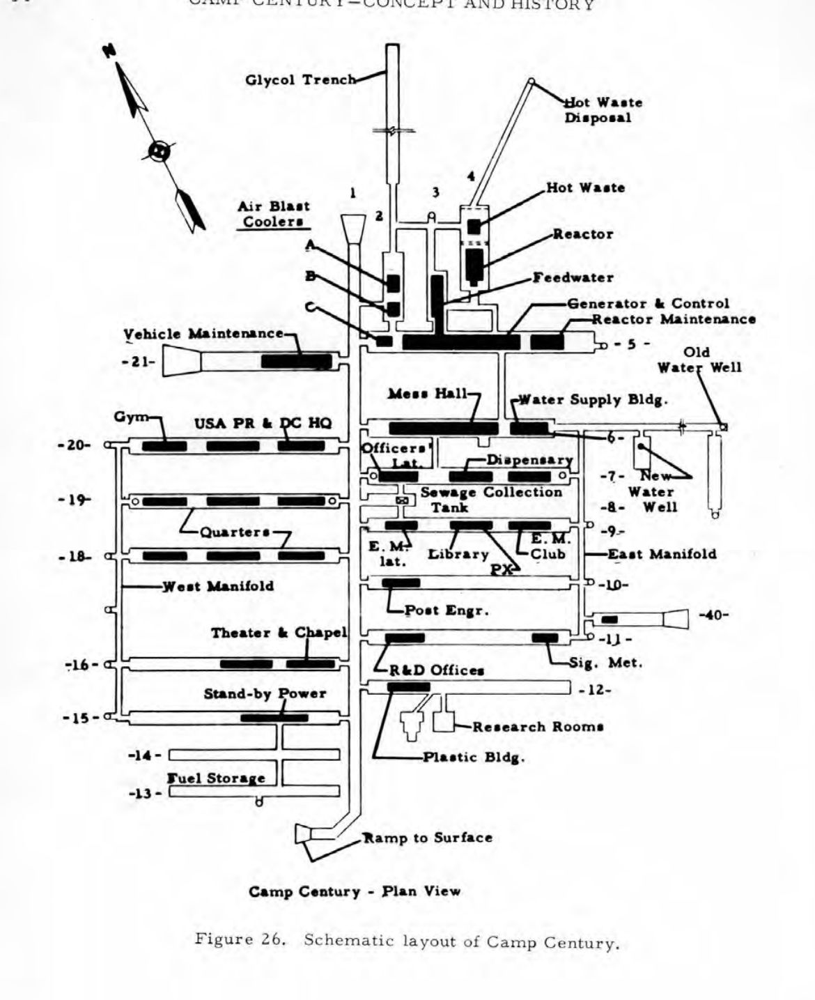
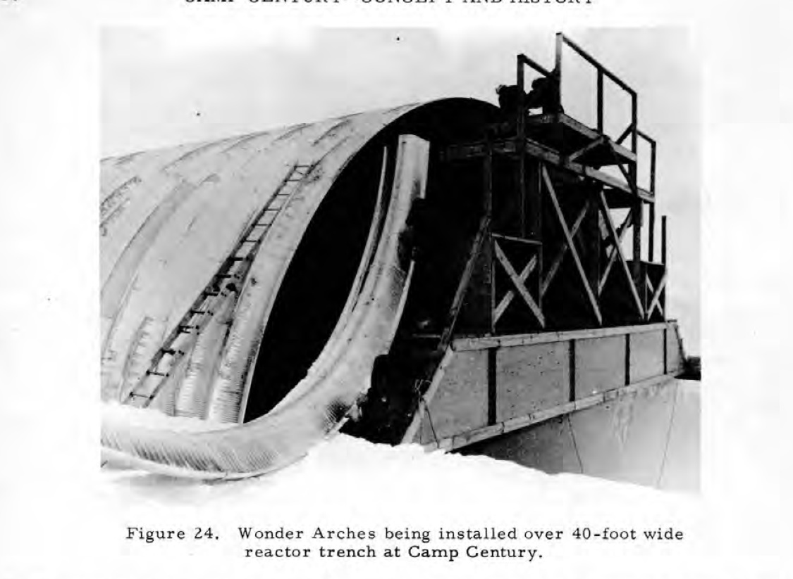
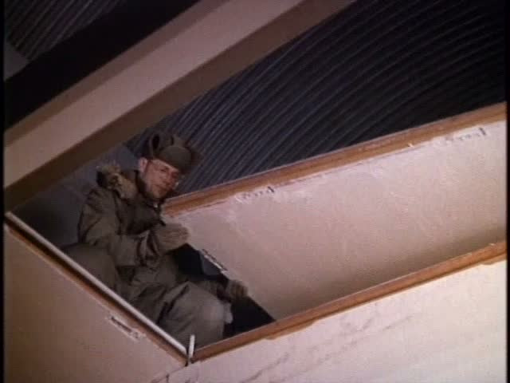
Factual boundary: Qualitative cutaway, not measured geometry or a literal historic view. No1963 deformation rate in this opening illustration.
Prompt / production brief
D01: Authentic report identity
Exact narration cue: published engineering report · CC07-S4-CH01-B02
AUTHENTIC_SOURCE_NO_IMAGEGEN · PREPARATION_READY_REFERENCES_REVIEWED_OUTPUT_NOT_GENERATED
Use original cover. Brief readable hold, then source-led cut to the relevant page. Never generate report text.
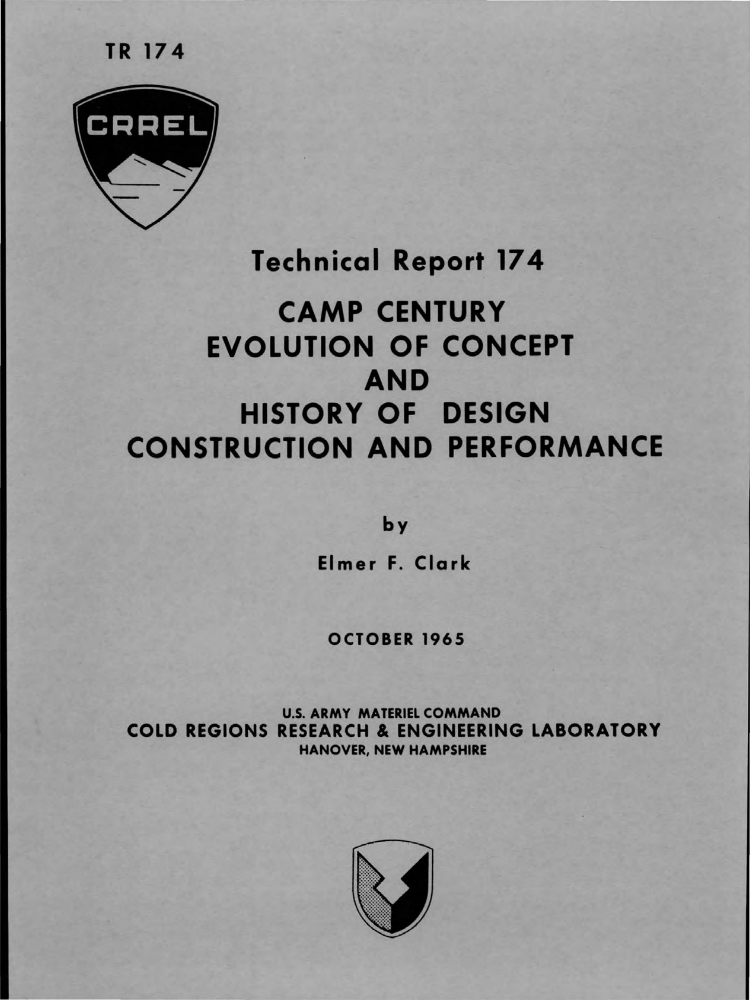
Factual boundary: No fake stamp, altered date or decorative declassification overlay.
Prompt / production brief
CH02
C01: Supply distance
Exact narration cue: one hundred thirty-eight miles · CC07-S4-CH02-B02
DATA_LOCKED_CHART_NO_IMAGEGEN · PREPARATION_READY_REFERENCES_REVIEWED_OUTPUT_NOT_GENERATED
Reconstruct in editable SVG/Fusion from the accompanying exact CSV, with thin axes, generous label margins and one restrained emphasis. Dense facts stay deterministic.
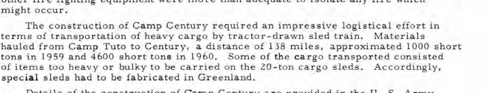
Factual boundary: Two-node route-length diagram, NOT a geographic map. No invented coordinates, road, route shape or Thule distance.
Prompt / production brief
C02: Construction cargo
Exact narration cue: four thousand six hundred · CC07-S4-CH02-B03
DATA_LOCKED_CHART_NO_IMAGEGEN · PREPARATION_READY_REFERENCES_REVIEWED_OUTPUT_NOT_GENERATED
Reconstruct in editable SVG/Fusion from the accompanying exact CSV, with thin axes, generous label margins and one restrained emphasis. Dense facts stay deterministic.
Factual boundary: Zero-baseline bars1000 and4600; sum5600 identified as derived total. No invented quarterly time series.
Prompt / production brief
G11: The material they could cut
Exact narration cue: easier to cut than rock · CC07-S4-CH02-B04
IMAGEGEN_REFERENCED_ILLUSTRATION · PREPARATION_READY_REFERENCES_REVIEWED_OUTPUT_NOT_GENERATED
One informative close cross-section of compacted snow/firn under an ordinary snow surface, with a shallow open trench and the actual Peter cutter. Contrast compacted snow with a small schematic bedrock swatch clearly separated as a material comparison, never as a real local geological section. No cave, TBM, blast, glacier crevasse or flowing-water cavern.
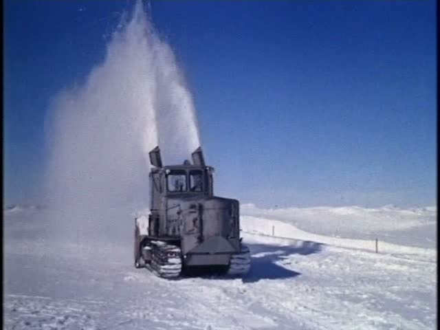
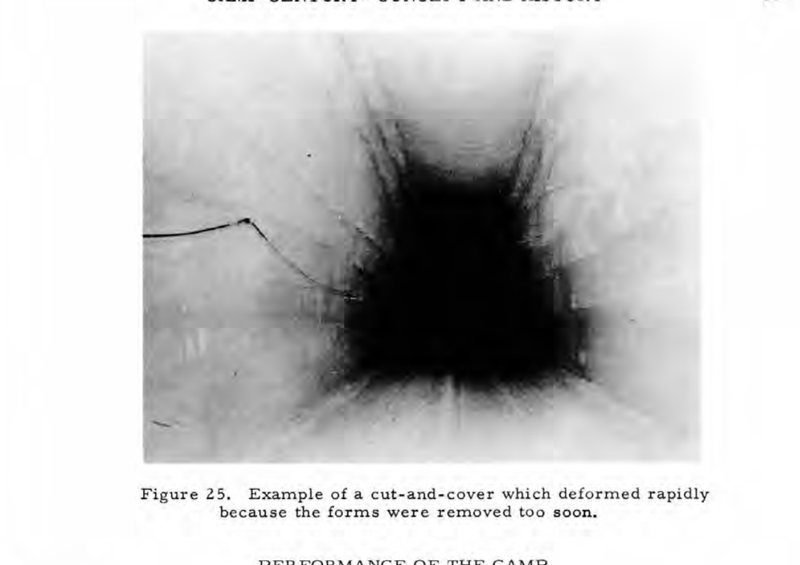
Factual boundary: Qualitative material comparison; not a claim of a measured bedrock depth at the camp.
Prompt / production brief
G12: Loads needed special sleds
Exact narration cue: special sleds · CC07-S4-CH02-B02
IMAGEGEN_REFERENCED_ILLUSTRATION · PREPARATION_READY_REFERENCES_REVIEWED_OUTPUT_NOT_GENERATED
A complete period engineering illustration of a long awkward construction load carried by a tractor-drawn sled train. Preserve the runners, cargo supports, load scale and equipment silhouette visible in the references. Indicate why a long prefabricated load needs support along its length, without giving fabrication dimensions, new mechanical designs or an invented load capacity.
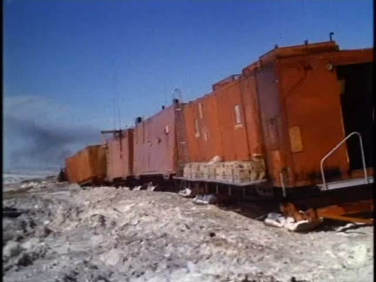
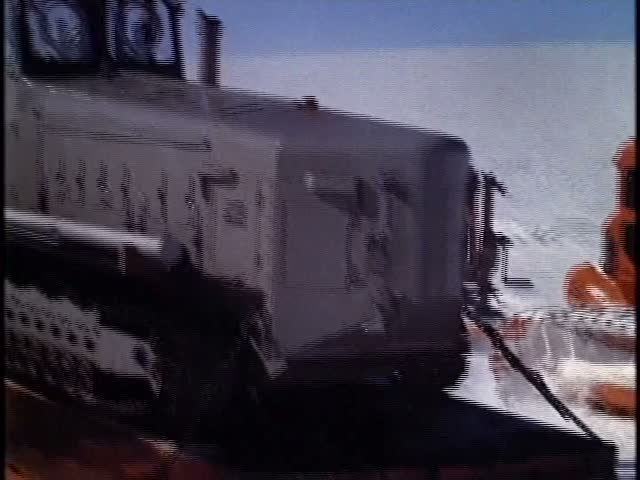
Factual boundary: Camp Century supply chain, not footage inside the base; no invented measured sled blueprint.
Prompt / production brief
G13: The convoy had its own supply needs
Exact narration cue: Spare parts · CC07-S4-CH02-B03
IMAGEGEN_REFERENCED_ILLUSTRATION · PREPARATION_READY_REFERENCES_REVIEWED_OUTPUT_NOT_GENERATED
An editorial logistics illustration of one actual-style tractor convoy carrying construction material plus ordinary fuel and spare-part cargo. Make the physical support burden legible with two small cargo details, not interface panels. No precise consumption, number of trips, breakdown event, calendar or invented cargo quantities.
Factual boundary: Qualitative recurring supply burden; no guessed fuel-economy calculation.
Prompt / production brief
CH03
G02: Cut-and-cover method
Exact narration cue: cuts a long trench · CC07-S4-CH03-B01
IMAGEGEN_REFERENCED_ILLUSTRATION · PREPARATION_READY_REFERENCES_REVIEWED_OUTPUT_NOT_GENERATED
A complete three-phase engineering illustration across one continuous snow section: excavated trench by a Peter miller, roof arch placed above a trench, the completed covered opening. Use consistent scale and camera across phases. The machines must look like the actual reference. No bedrock drilling, TBM, underground blast or tunnel-boring machine.
Factual boundary: A method explanation, not three measured stages of a particular filmed trench.
Prompt / production brief
G03: Prefab room inside the arch
Exact narration cue: buildings were only the beginning · CC07-S4-CH03-B03
IMAGEGEN_REFERENCED_ILLUSTRATION · PREPARATION_READY_REFERENCES_REVIEWED_OUTPUT_NOT_GENERATED
One close technical cutaway showing timber floor framing supporting a plain prefabricated room within a snow trench. Preserve the visible materials and ordinary construction of the references. Distinguish room roof from the surrounding snow arch with clear drafting. No invented equipment or dimensions.

Factual boundary: Explains nesting of structures; does not assert measured clearances or prove a form-removal failure.
Prompt / production brief
G04: Heat changes the surrounding material
Exact narration cue: Heat. · CC07-S4-CH03-B04
IMAGEGEN_REFERENCED_ILLUSTRATION · PREPARATION_READY_REFERENCES_REVIEWED_OUTPUT_NOT_GENERATED
A small heated room inside a snow arch in cross-section. Sparse muted warm wash around the room indicates local warming; charcoal snow contours remain clear. Show the material as snow/firn, not liquid oceans or melting blue caverns. No quantitative temperature scale, radiation glow or reactor cutaway.
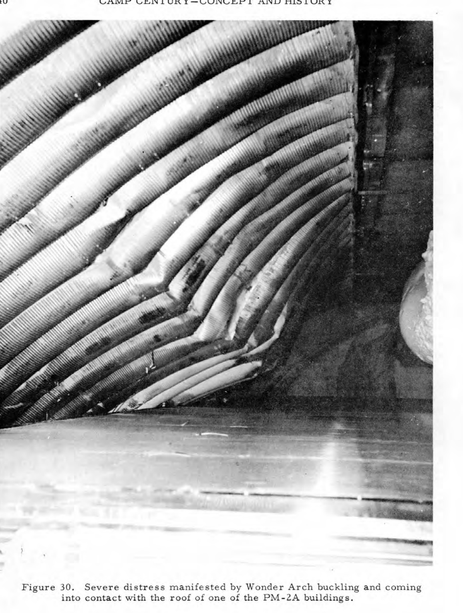
Factual boundary: Qualitative thermal influence only; no computed heat field or citywide collapse.
Prompt / production brief
D02: Actual constructed base layout
Exact narration cue: layout included a dining hall · CC07-S4-CH03-B03
AUTHENTIC_SOURCE_NO_IMAGEGEN · PREPARATION_READY_REFERENCES_REVIEWED_OUTPUT_NOT_GENERATED
Use original Fig26. Focus on actual Main Street, living/service spaces and workshop; no all-page yellow box.
Factual boundary: Dense original labels remain in scan; do not invent rooms or redraw the entire plan through ImageGen.
Prompt / production brief
G14: Removing support too soon
Exact narration cue: support forms · CC07-S4-CH03-B03
IMAGEGEN_REFERENCED_ILLUSTRATION · PREPARATION_READY_REFERENCES_REVIEWED_OUTPUT_NOT_GENERATED
A restrained cutaway explaining the role of temporary snow-arch forms. Show a supported snow arch and a separate, modestly deformed opening after early form removal. The visual direction follows the authentic Fig25. No total collapse, casualties, precise elapsed time or asserted dimensions; do not make all roof types the same.
Factual boundary: Mechanism illustration anchored in one documented form-removal problem, not a universal camp history.
Prompt / production brief
G15: Services also occupied the trench
Exact narration cue: network of smaller passages · CC07-S4-CH03-B03
IMAGEGEN_REFERENCED_ILLUSTRATION · PREPARATION_READY_REFERENCES_REVIEWED_OUTPUT_NOT_GENERATED
A clear period-report perspective into an ordinary communication trench showing a plain prefab room beside overhead utility lines, using the exact kinds of suspended lines visible in the reference. Separate the room envelope, walkway and services clearly; avoid dense fictional pipe networks, digital controls, wires through solid ice or invented electrical schematics.
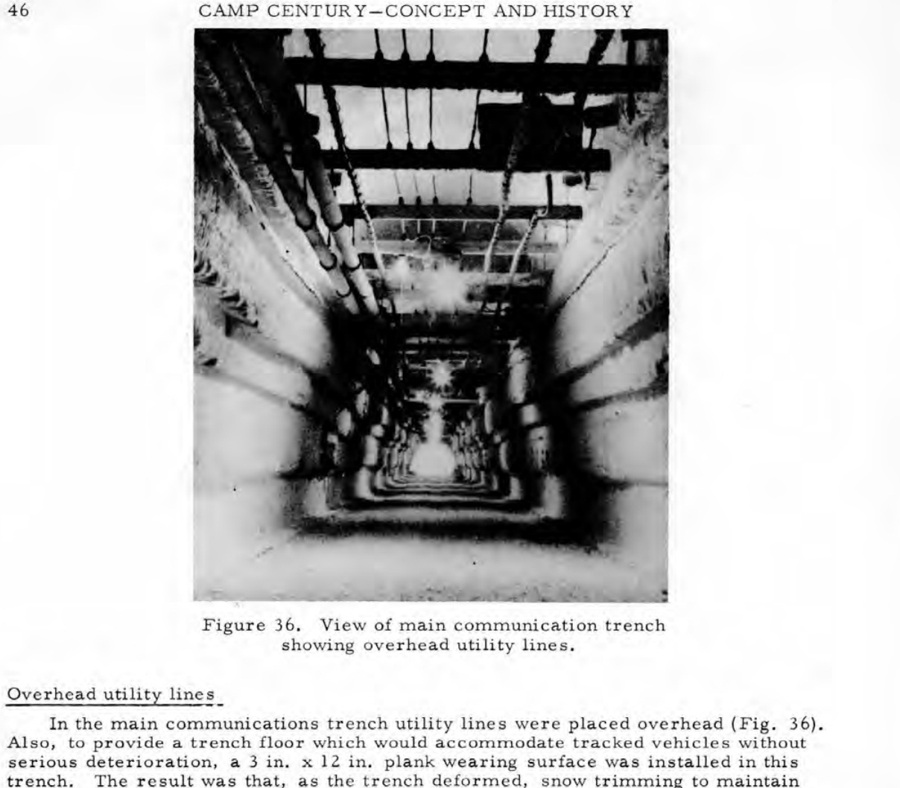
Factual boundary: Appearance/space explanation only; not an installation or electrical-wiring plan.
Prompt / production brief
D11: What the design called for
Exact narration cue: a medical facility, workshops · CC07-S4-CH03-B03
AUTHENTIC_SOURCE_NO_IMAGEGEN · PREPARATION_READY_REFERENCES_REVIEWED_OUTPUT_NOT_GENERATED
Original design-criteria list. Show two or three relevant intended functions, with the DESIGN CRITERIA context intact. Do not present planned criteria as a verified as-built room inventory.
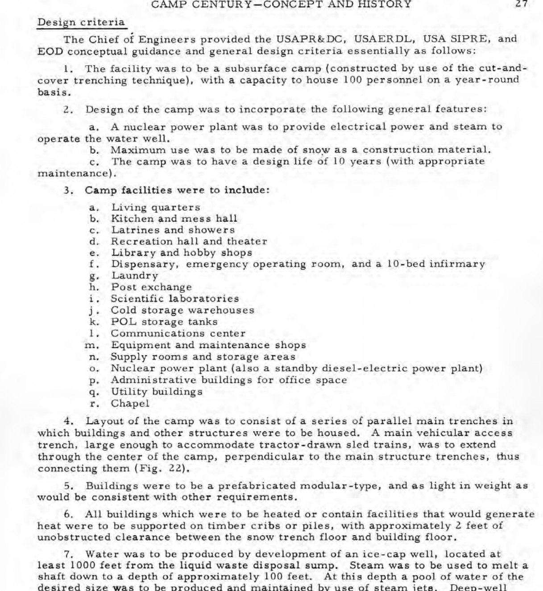
Factual boundary: Authentic requirements, not generated meeting notes. The criteria page mentions a100-person year-round design criterion, not the later200-person capacity in V4. Crop/show the functional-facility list only; never use that100-person line as evidence for the200-person narration.
Prompt / production brief
D12: The photographed early-form problem
Exact narration cue: openings began to deform · CC07-S4-CH03-B03
AUTHENTIC_SOURCE_NO_IMAGEGEN · PREPARATION_READY_REFERENCES_REVIEWED_OUTPUT_NOT_GENERATED
Use actual Fig25 and its full caption. No synthetic collapse effect. Let the photograph explain the documented deformation after early form removal.
Factual boundary: One documented problem; no universal failure or casualties.
Prompt / production brief
D14: Utilities in the actual passage
Exact narration cue: network of smaller passages · CC07-S4-CH03-B03
AUTHENTIC_SOURCE_NO_IMAGEGEN · PREPARATION_READY_REFERENCES_REVIEWED_OUTPUT_NOT_GENERATED
Use the actual Fig36 overhead-line photograph with original caption. Focus on the services taking up space; do not generate wires over it.
Factual boundary: A still, not newly recovered moving footage or a wiring diagram.
Prompt / production brief
CH04
G05: Water supply and wastewater are different systems
Exact narration cue: base required water · CC07-S4-CH04-B03
IMAGEGEN_REFERENCED_ILLUSTRATION · PREPARATION_READY_REFERENCES_REVIEWED_OUTPUT_NOT_GENERATED
Two clear separate subsurface systems within one finished cutaway: a meltwater well feeding a small water-supply building; a separate wastewater sump influencing nearby supporting snow locally. A thin physical separation makes the distinction obvious. The relative placement is conceptual, not a map. Do not connect drinking water to sewage or to a reactor coolant loop. Do not use the fan/air-well Fig32 as a drinking-water design. No plant internals, valves, operating parameters or radioactive visual symbols.


Factual boundary: Not to scale; local sewage-related settlement, not reactor meltdown or all-camp failure.
Prompt / production brief
D03: Actual cost accounting
Exact narration cue: five point seven million · CC07-S4-CH04-B02
AUTHENTIC_SOURCE_NO_IMAGEGEN · PREPARATION_READY_REFERENCES_REVIEWED_OUTPUT_NOT_GENERATED
Show the original PM-2A5,700,000 line and7,920,000 total with their table labels and actual-total footnote.

Factual boundary: Period dollars; no inflation-adjusted claim and no generated accounting sheet.
Prompt / production brief
C03: Power plant share of initial cost
Exact narration cue: five point seven million · CC07-S4-CH04-B02
DATA_LOCKED_CHART_NO_IMAGEGEN · PREPARATION_READY_REFERENCES_REVIEWED_OUTPUT_NOT_GENERATED
Reconstruct in editable SVG/Fusion from the accompanying exact CSV, with thin axes, generous label margins and one restrained emphasis. Dense facts stay deterministic.
Factual boundary: Total7,920,000, PM-2A5,700,000, derived remainder2,220,000. Shared baseline/proportional lengths; no modern dollars.
Prompt / production brief
G16: A power station arrived in pieces
Exact narration cue: reactor arrived · CC07-S4-CH04-B02
IMAGEGEN_REFERENCED_ILLUSTRATION · PREPARATION_READY_REFERENCES_REVIEWED_OUTPUT_NOT_GENERATED
A finished technical-report illustration of externally visible modular plant cargo moving on actual-style trailers and sleds. Use the large cylindrical enclosure and ordinary transport framing as appearance references. Explain modular transport without showing reactor internals, fuel, operating components or an invented assembly sequence. No exact package count unless separately verified.
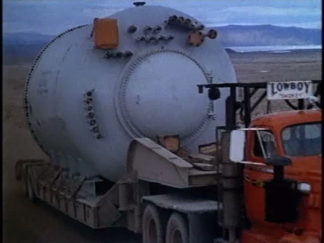
Factual boundary: Transport concept, not an operating-reactor design or an actual transport photograph.
Prompt / production brief
G17: One plant served many ordinary functions
Exact narration cue: electrical and heating system · CC07-S4-CH04-B01
IMAGEGEN_REFERENCED_ILLUSTRATION · PREPARATION_READY_REFERENCES_REVIEWED_OUTPUT_NOT_GENERATED
A high-level editorial view of a small camp plant building connected by two simple qualitative paths to ordinary lit/heated prefab rooms. The paths stand for electricity and heat; no reactor internals, component circuit, temperatures, power-flow measurements, radiation beam or weapons imagery. Room functions and building outlines come from the actual plan.
Factual boundary: Functional relationship only; no operating instructions, measured flow or claim that Iceworm financed it.
Prompt / production brief
G18: The local foundation problem
Exact narration cue: holding up part · CC07-S4-CH04-B04
IMAGEGEN_REFERENCED_ILLUSTRATION · PREPARATION_READY_REFERENCES_REVIEWED_OUTPUT_NOT_GENERATED
One local, qualitative cross-section around the wastewater sump and two neighboring prefab buildings. Indicate warmed supporting snow and modest localized settlement while the more distant camp remains intact. Keep sewage separate from drinking water and reactor components. No explosion, deaths, campwide sinkhole, molten reactor or radioactive river.
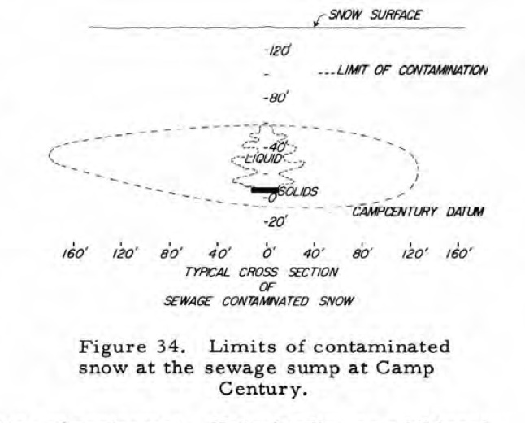
Factual boundary: Specific local sewage/heat problem, not a recreation of an entire camp collapse; not to scale.
Prompt / production brief
D15: The real water well
Exact narration cue: base required water · CC07-S4-CH04-B03
AUTHENTIC_SOURCE_NO_IMAGEGEN · PREPARATION_READY_REFERENCES_REVIEWED_OUTPUT_NOT_GENERATED
Use actual Fig35 looking down the water well; retain the caption and contrast with the separate wastewater discussion. Fig32 air well is not a drinking-water source.
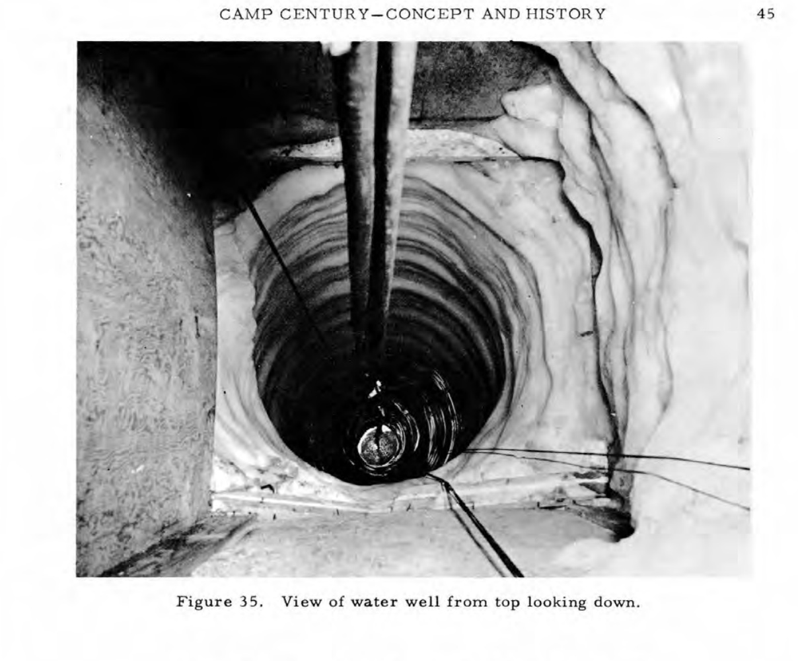
Factual boundary: Water supply picture, not an image of sewage or reactor fuel.
Prompt / production brief
D16: A measured local sewage profile
Exact narration cue: two nearby buildings · CC07-S4-CH04-B03
AUTHENTIC_SOURCE_NO_IMAGEGEN · PREPARATION_READY_REFERENCES_REVIEWED_OUTPUT_NOT_GENERATED
Use the authentic Fig34 sketch and its sewage-contaminated-snow caption. No full yellow diagram fill; a small focus on the original local profile only.
Factual boundary: Sewage-contaminated snow; not a diagram of radioactive fallout or a reactor meltdown.
Prompt / production brief
D17: The primary machinery-performance record
Exact narration cue: repeated mechanical troubles · CC07-S4-CH04-B04
AUTHENTIC_SOURCE_NO_IMAGEGEN · PREPARATION_READY_REFERENCES_REVIEWED_OUTPUT_NOT_GENERATED
Read the relevant turbine-generator service paragraph and retain its original documentary context. No invented repair log, explosion or plant-failure reenactment.
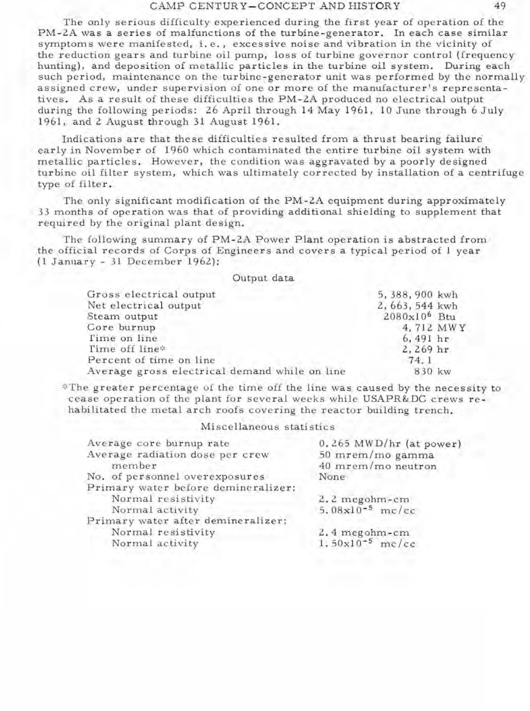
Factual boundary: Mechanical service trouble, not a documented nuclear accident.
Prompt / production brief
D18: Planning came before the missile proposal
Exact narration cue: planned before Project Iceworm · CC07-S4-CH04-B04
AUTHENTIC_SOURCE_NO_IMAGEGEN · PREPARATION_READY_REFERENCES_REVIEWED_OUTPUT_NOT_GENERATED
Use the primary October1958 ALCO design-study planning paragraph. This supports the sequence in V4; do not imply the later Iceworm proposal financed the original plant.
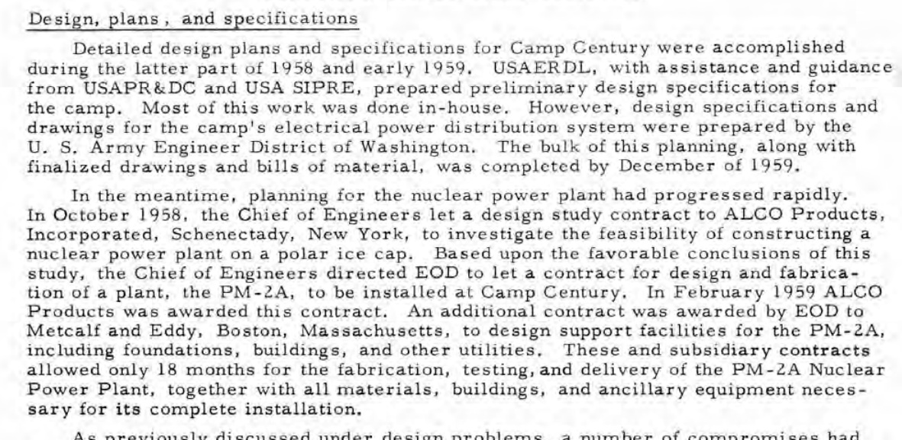
Factual boundary: Actual plant planning record; no fake Iceworm authorization page.
Prompt / production brief
C08: Do not reverse the causal sequence
Exact narration cue: planned before Project Iceworm · CC07-S4-CH04-B04
DATA_LOCKED_CHART_NO_IMAGEGEN · PREPARATION_READY_REFERENCES_REVIEWED_OUTPUT_NOT_GENERATED
Build an editable restrained diagram from the exact narration categories or supplied data. Keep labels short, readable and geometrically stable; use physical/geographic context instead of dashboard cards.
Factual boundary: Sequence diagram, not an asserted financial link or a fabricated funding approval. Use no exact proposal year without separate evidence.
Prompt / production brief
C15: Reactor heat is not delivered electricity
Exact narration cue: figures measure different things · CC07-S4-CH04-B02
DATA_LOCKED_CHART_NO_IMAGEGEN · PREPARATION_READY_REFERENCES_REVIEWED_OUTPUT_NOT_GENERATED
Build an editable restrained diagram from the exact narration categories or supplied data. Keep labels short, readable and geometrically stable; use physical/geographic context instead of dashboard cards.
Factual boundary: 10MW thermal versus1.56MW net electrical rating (V4 narrates roughly1.5MW). Separate clearly identified quantities, not stacked parts, not net measured output, not an inferred efficiency or reactor-design diagram.
Prompt / production brief
C16: Two kinds of power-supply burden
Exact narration cue: diesel generators · CC07-S4-CH04-B01
DATA_LOCKED_CHART_NO_IMAGEGEN · PREPARATION_READY_REFERENCES_REVIEWED_OUTPUT_NOT_GENERATED
Build an editable restrained diagram from the exact narration categories or supplied data. Keep labels short, readable and geometrically stable; use physical/geographic context instead of dashboard cards.
Factual boundary: Qualitative engineering trade-off, not a life-cycle-cost model, fuel saving estimate, ROI or proof of a single motive.
Prompt / production brief
CH05
C05: Proposal versus actual deployment
Exact narration cue: six hundred missiles · CC07-S4-CH05-B02
DATA_LOCKED_CHART_NO_IMAGEGEN · PREPARATION_READY_REFERENCES_REVIEWED_OUTPUT_NOT_GENERATED
Reconstruct in editable SVG/Fusion from the accompanying exact CSV, with thin axes, generous label margins and one restrained emphasis. Dense facts stay deterministic.
Factual boundary: High-level historical totals only. Facts from Nielsen2014p445; no missile or operational-network imagery, technical layouts or copyrighted article-page image.
Prompt / production brief
C09: A larger system meant more support
Exact narration cue: Every passage would have to remain open · CC07-S4-CH05-B03
DATA_LOCKED_CHART_NO_IMAGEGEN · PREPARATION_READY_REFERENCES_REVIEWED_OUTPUT_NOT_GENERATED
Build an editable restrained diagram from the exact narration categories or supplied data. Keep labels short, readable and geometrically stable; use physical/geographic context instead of dashboard cards.
Factual boundary: Qualitative support demands from V4; not a literal deployment map, engineered missile network or multiplied cost calculation.
Prompt / production brief
C10: A research base was not political consent
Exact narration cue: within the Kingdom of Denmark · CC07-S4-CH05-B03
DATA_LOCKED_CHART_NO_IMAGEGEN · PREPARATION_READY_REFERENCES_REVIEWED_OUTPUT_NOT_GENERATED
Build an editable restrained diagram from the exact narration categories or supplied data. Keep labels short, readable and geometrically stable; use physical/geographic context instead of dashboard cards.
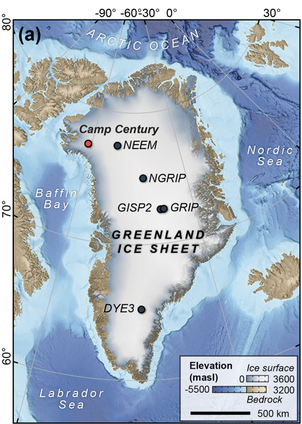
Factual boundary: Geographic/sovereignty context. No missile routes, targeting geometry, invented agreement or assertion that engineering demonstration granted weapons consent.
Prompt / production brief
C11: The proposal ended without deployment
Exact narration cue: rejected in nineteen sixty-three · CC07-S4-CH05-B04
DATA_LOCKED_CHART_NO_IMAGEGEN · PREPARATION_READY_REFERENCES_REVIEWED_OUTPUT_NOT_GENERATED
Build an editable restrained diagram from the exact narration categories or supplied data. Keep labels short, readable and geometrically stable; use physical/geographic context instead of dashboard cards.
Factual boundary: Attribute1963 rejection to the later cited study; no fake cancellation memo or imagery of installed missiles.
Prompt / production brief
CH06
G06: Why usable room disappears
Exact narration cue: walls creep inward · CC07-S4-CH06-B01
IMAGEGEN_REFERENCED_ILLUSTRATION · PREPARATION_READY_REFERENCES_REVIEWED_OUTPUT_NOT_GENERATED
A qualitative side-by-side interior snow-arch section, showing a plain room under an initially taller opening and a later reduced opening. Use the measured profile reference only to understand the direction and irregularity of deformation. No fabricated exact graph, time series, numeric axis or copied rate labels; exact data will use the authentic figure and separate verified chart.

Factual boundary: Qualitative geometry, not a reconstruction of exact survey epochs.
Prompt / production brief
G07: The repeated maintenance job
Exact narration cue: trimming and removing · CC07-S4-CH06-B03
IMAGEGEN_REFERENCED_ILLUSTRATION · PREPARATION_READY_REFERENCES_REVIEWED_OUTPUT_NOT_GENERATED
A readable three-action maintenance vignette: a worker trims encroaching snow beside a prefab eave with the small corded electric chain saw in the actual photograph; loose cut snow is gathered; a small load is removed. One continuous technical illustration, no boxed cards. Preserve ordinary period workwear and the tool silhouette. No chainsaw attacking steel beams, blast demolition or fictional disaster.

Factual boundary: Illustrates recurring labour.20,000yd3 is an estimate, not footage of actual annual removal.
Prompt / production brief
D04: Actual measured profiles
Exact narration cue: same tunnel sections at different dates · CC07-S4-CH06-B02
AUTHENTIC_SOURCE_NO_IMAGEGEN · PREPARATION_READY_REFERENCES_REVIEWED_OUTPUT_NOT_GENERATED
Keep Fig28/29 contours, dates, station names and scale bars. Reveal original profiles, then the two local-rate captions.
Factual boundary: No yellow fill over the drawing, invented contour, extrapolation or whole-camp rate.
Prompt / production brief
D05: Annual trimming estimate
Exact narration cue: twenty thousand · CC07-S4-CH06-B03
AUTHENTIC_SOURCE_NO_IMAGEGEN · PREPARATION_READY_REFERENCES_REVIEWED_OUTPUT_NOT_GENERATED
Focus precisely on estimated and20,000 cubic yards in the original paragraph; short translucent marker sweep behind text, not a line through it.

Factual boundary: Keep the estimate qualifier attached to the quantity.
Prompt / production brief
D06: The actual electric-chain-saw photograph
Exact narration cue: Figure thirty-three · CC07-S4-CH06-B04
AUTHENTIC_SOURCE_NO_IMAGEGEN · PREPARATION_READY_REFERENCES_REVIEWED_OUTPUT_NOT_GENERATED
Use the original Fig33 photograph and explanatory caption. Gentle focus on tool and eave; magnifier only if needed for readability.
Factual boundary: A still photograph is not moving archive; do not generate a new worker and call it proof.
Prompt / production brief
C04: Two different measured local rates
Exact narration cue: twelve percent · CC07-S4-CH06-B02
DATA_LOCKED_CHART_NO_IMAGEGEN · PREPARATION_READY_REFERENCES_REVIEWED_OUTPUT_NOT_GENERATED
Reconstruct in editable SVG/Fusion from the accompanying exact CSV, with thin axes, generous label margins and one restrained emphasis. Dense facts stay deterministic.
Factual boundary: 12% and17% annual area loss at two specified sections; not vertical inches, universal closure or a recorded annual series.
Prompt / production brief
G19: Lost clearance has a practical cost
Exact narration cue: shrinking of empty space · CC07-S4-CH06-B01
IMAGEGEN_REFERENCED_ILLUSTRATION · PREPARATION_READY_REFERENCES_REVIEWED_OUTPUT_NOT_GENERATED
A period technical illustration of a human and a small actual-style tracked vehicle inside an arched passage, showing why a reduced opening restricts usable headroom and passage. Keep people and machine proportions consistent with the corridor photograph. A thin comparison outline may indicate the former space, without dates, numerical scale or invented survey points.
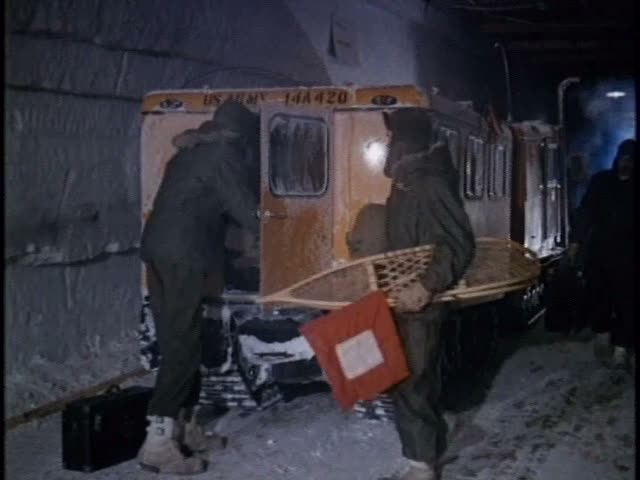
Factual boundary: Functional qualitative explanation, not a new measured profile or an accident.
Prompt / production brief
G20: Snow could bury the entrance
Exact narration cue: Blowing snow · CC07-S4-CH06-B04
IMAGEGEN_REFERENCED_ILLUSTRATION · PREPARATION_READY_REFERENCES_REVIEWED_OUTPUT_NOT_GENERATED
A surface access ramp entering a snow trench, with a restrained wind-blown accumulation building up at the ramp entrance. Use ordinary period tracks and the actual-style portal. Explain obstruction of access, not an avalanche, natural ice cave, sudden structural disaster, exact storm or measured snow depth.
Factual boundary: Qualitative documented access problem; weather field is illustrative, not a reconstruction of a dated event.
Prompt / production brief
D13: Actual vertical-clearance measurements
Exact narration cue: sixteen inches · CC07-S4-CH06-B02
AUTHENTIC_SOURCE_NO_IMAGEGEN · PREPARATION_READY_REFERENCES_REVIEWED_OUTPUT_NOT_GENERATED
Show the actual TableII headings, height measurement definition and average rows. Distinguish vertical closure from the area-profile percentages. Use a readable crop and sequential row focus.
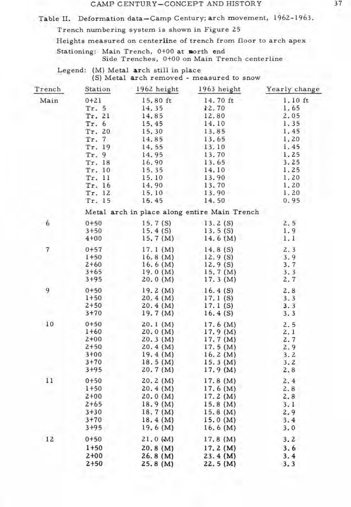
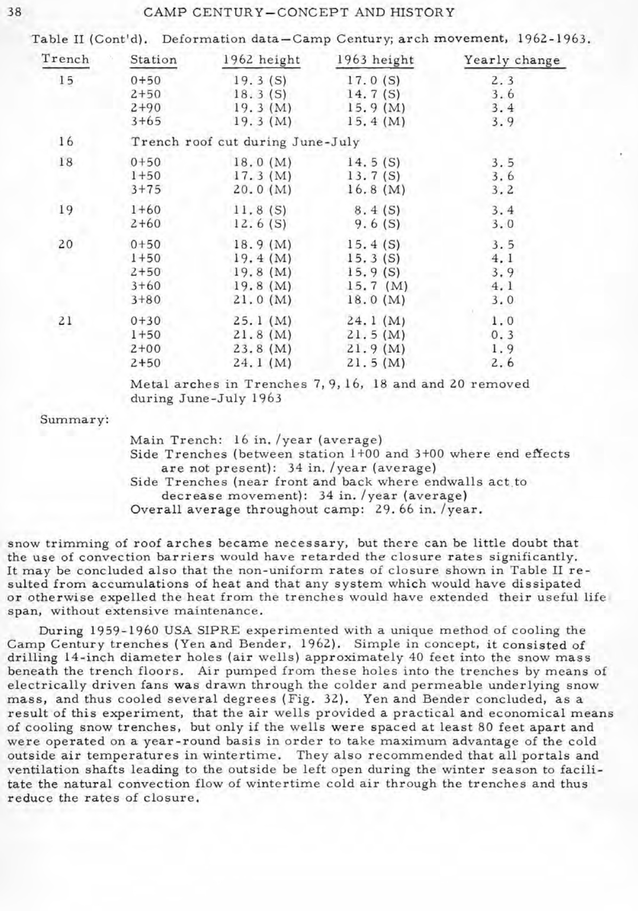
Factual boundary: Inches of height per year; not percentages of floor area or identical values for every trench.
Prompt / production brief
C07: Height loss, separately from area loss
Exact narration cue: thirty-four inches · CC07-S4-CH06-B02
DATA_LOCKED_CHART_NO_IMAGEGEN · PREPARATION_READY_REFERENCES_REVIEWED_OUTPUT_NOT_GENERATED
Build an editable restrained diagram from the exact narration categories or supplied data. Keep labels short, readable and geometrically stable; use physical/geographic context instead of dashboard cards.
Factual boundary: Zero-baseline bars16 and34; explicitly average vertical closure, not area percentages.
Prompt / production brief
CH07
D07: GAO assessment qualification
Exact narration cue: Government Accountability Office · CC07-S4-CH07-B03
AUTHENTIC_SOURCE_NO_IMAGEGEN · SOURCE_IMAGE_HOLD_DO_NOT_GENERATE
Original Highlights Greenland paragraph required; local PDF acquisition returned403. Do not fake a GAO page. Use the source facts in editorial notes until genuine document image is acquired.
Factual boundary: DOCUMENT_BINARY_HOLD; web text verified, local source image missing.
Prompt / production brief
C06: Selected evidence chronology
Exact narration cue: dismantled and removed · CC07-S4-CH07-B01
DATA_LOCKED_CHART_NO_IMAGEGEN · PREPARATION_READY_REFERENCES_REVIEWED_OUTPUT_NOT_GENERATED
Reconstruct in editable SVG/Fusion from the accompanying exact CSV, with thin axes, generous label margins and one restrained emphasis. Dense facts stay deterministic.

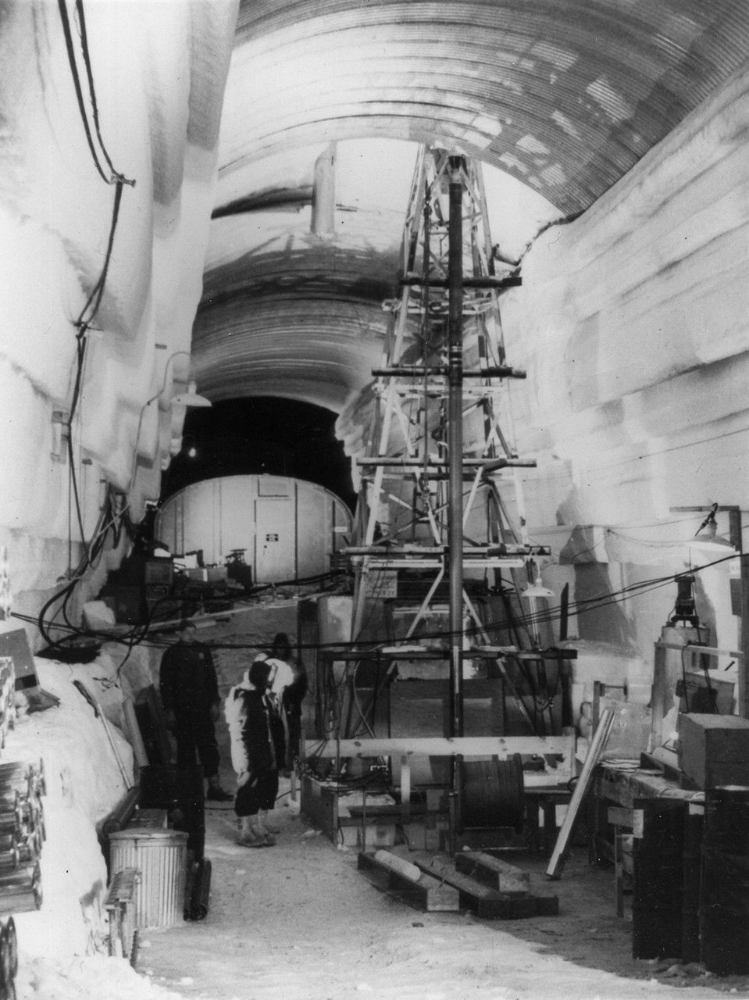

Factual boundary: Show only the relevant2-3 dated events at each chapter transition. Do not invent a single uncontested end-of-occupation date; V4 discloses1966/1967 source differences. SOURCE_CONFLICT_HOLD for an exact rediscovery date: SCI24Fig3f labels2017 rediscovery and2019pilot analysis, while V4 narrates2019. Do not render an undisputed2019rediscovery event.
Prompt / production brief
G21: Removed plant, remaining infrastructure
Exact narration cue: reactor hardware was taken out · CC07-S4-CH07-B02
IMAGEGEN_REFERENCED_ILLUSTRATION · PREPARATION_READY_REFERENCES_REVIEWED_OUTPUT_NOT_GENERATED
A clear high-level historical comparison: an external plant module being taken away above ground, while a simple cutaway retains ordinary buried building structures and waste areas. Follow the actual lift silhouette. Show no buried reactor core, nuclear warheads, leaking glowing barrels, detailed disposal layout or invented contaminated area.
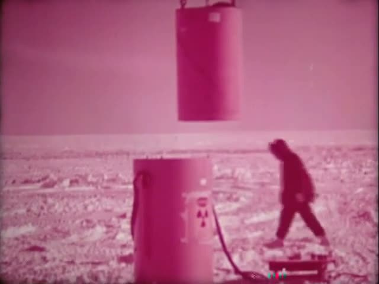
Factual boundary: Explains the distinction in the narration; does not certify that every item of hardware or waste had the same fate.
Prompt / production brief
G22: Burial is not disappearance
Exact narration cue: wastes remained in the ice sheet · CC07-S4-CH07-B02
IMAGEGEN_REFERENCED_ILLUSTRATION · PREPARATION_READY_REFERENCES_REVIEWED_OUTPUT_NOT_GENERATED
A quiet snow/firn section showing abandoned structural remnants beneath accumulated snow. Add a simple unobtrusive comparison surface to explain continued burial qualitatively. No precise yearly depth curve, present-day liquid plume, exposed contaminated river or forecast catastrophe. No working rooms, lights or people under the modern surface.
Factual boundary: Historical concept; not an observed present spill or a prediction of an exact exposure year.
Prompt / production brief
D19: The actual2021 model result
Exact narration cue: twenty-one study · CC07-S4-CH07-B03
AUTHENTIC_SOURCE_NO_IMAGEGEN · PREPARATION_READY_REFERENCES_REVIEWED_OUTPUT_NOT_GENERATED
Use untouched published Fig10 with its modeled/scenario qualifiers, author credit and different vertical scales. Do not treat model curves as observations or compare the two panels as if they share a scale.
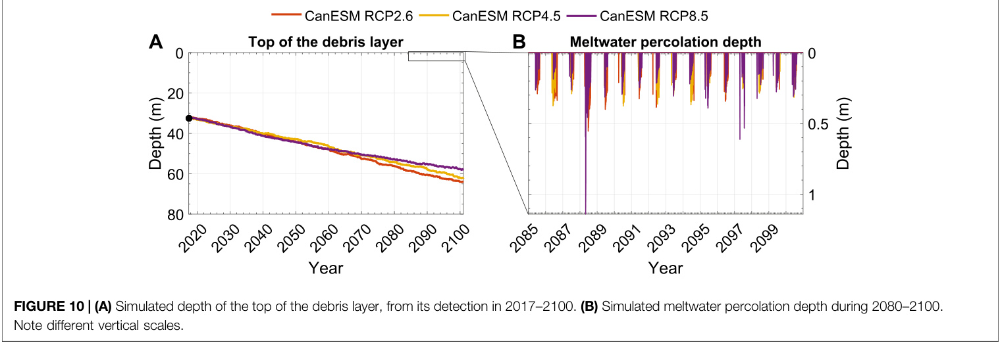
Factual boundary: 2021 modeled result under assumptions, not proof of zero future risk.
Prompt / production brief
C12: What was removed and what remained
Exact narration cue: reactor hardware was taken out · CC07-S4-CH07-B02
DATA_LOCKED_CHART_NO_IMAGEGEN · PREPARATION_READY_REFERENCES_REVIEWED_OUTPUT_NOT_GENERATED
Build an editable restrained diagram from the exact narration categories or supplied data. Keep labels short, readable and geometrically stable; use physical/geographic context instead of dashboard cards.
Factual boundary: Categorical contrast only; no waste quantity estimate, buried operating reactor or complete item inventory.
Prompt / production brief
C13: A scenario is not an observed spill
Exact narration cue: scenario, not an observation · CC07-S4-CH07-B03
DATA_LOCKED_CHART_NO_IMAGEGEN · PREPARATION_READY_REFERENCES_REVIEWED_OUTPUT_NOT_GENERATED
Build an editable restrained diagram from the exact narration categories or supplied data. Keep labels short, readable and geometrically stable; use physical/geographic context instead of dashboard cards.
Factual boundary: Do not invent a common numeric axis, present-day spill, zero-risk guarantee or exact exposure year. Preserve assumptions and model/observation distinction.
Prompt / production brief
CH08
G08: Deep core versus the shallow base
Exact narration cue: reached the bottom · CC07-S4-CH08-B01
IMAGEGEN_REFERENCED_ILLUSTRATION · PREPARATION_READY_REFERENCES_REVIEWED_OUTPUT_NOT_GENERATED
A vertical explanatory section through Greenland snow and ice, with a small shallow camp near the top and a deep scientific core reaching the ice-sediment boundary far below. Include a clear scale-break convention; it is not to scale. Show plain drilling equipment informed by the authentic1966 drilling-trench photo. The basal sediment belongs below the ice sheet, not inside a barracks tunnel.
Factual boundary: Do not invent a precise drilling depth or use the2024 minimum burial depth as a1966 camp depth.
Prompt / production brief
G09: From frozen sample to scientific evidence
Exact narration cue: ancient plants · CC07-S4-CH08-B02
IMAGEGEN_REFERENCED_ILLUSTRATION · PREPARATION_READY_REFERENCES_REVIEWED_OUTPUT_NOT_GENERATED
An informative editorial drawing of a frozen sediment-bearing core cut face, a carefully held small sediment sample and a simple optical examination station, arranged in a clear visual progression. Follow the actual brown-grey archived core material; no gemstones or fantasy fossils. No identifiable plant species, numerical age, fake micrograph, invented data trace or historic government label. Use restrained report-style ink and flat wash, not glossy product photography.

Factual boundary: Conceptual modern analysis; not a photo of a specific laboratory, fossil or dated specimen.
Prompt / production brief
G10: What radar sees
Exact narration cue: using radar to study · CC07-S4-CH08-B02
IMAGEGEN_REFERENCED_ILLUSTRATION · PREPARATION_READY_REFERENCES_REVIEWED_OUTPUT_NOT_GENERATED
A wide modern explanatory cutaway: a small airborne survey platform above the ice, a restrained broad side-looking radar sampling wedge, and buried structural traces below the surface. Use the actual NASA composite only to understand the kind of observation; never imitate or alter it into invented measurement data. No illuminated working underground city, people, accessible rooms, missile complex, fake heatmap or new radar returns.
Factual boundary: Method illustration only; original NASA radar is D08. Do not interpret a distant bed reflection plotted above the camp as physically above it.
Prompt / production brief
D08: Actual2024 radar composite
Exact narration cue: published the images · CC07-S4-CH08-B03
AUTHENTIC_SOURCE_NO_IMAGEGEN · PREPARATION_READY_REFERENCES_REVIEWED_OUTPUT_NOT_GENERATED
Use untouched actual NASA composite; retain meaningful context, original radar data and credit.
Factual boundary: Published25Nov2024, acquiredApril2024; not first radar detection, not an interior photograph.
Prompt / production brief
D09: Actual1966 drilling-trench photograph
Exact narration cue: nineteen sixty-six · CC07-S4-CH08-B01
AUTHENTIC_SOURCE_NO_IMAGEGEN · PREPARATION_READY_REFERENCES_REVIEWED_OUTPUT_NOT_GENERATED
Use untouched NARA photograph from NASA as the historical drilling reference; identify1966 in context.
Factual boundary: Still image, not motion; do not attribute an exact drilling moment absent a more specific caption.
Prompt / production brief
D10: Actual archived core interiors
Exact narration cue: Later studies found traces · CC07-S4-CH08-B02
AUTHENTIC_SOURCE_NO_IMAGEGEN · PREPARATION_READY_REFERENCES_REVIEWED_OUTPUT_NOT_GENERATED
Use only Fig2d cropped modern2021 photographs with retained specimen scale and CC BY credit.
Factual boundary: Photographed2021, published2024. Not a1966 photo or an ancient-plant micrograph.
Prompt / production brief
G23: A sample survived in an archive
Exact narration cue: samples were stored · CC07-S4-CH08-B01
IMAGEGEN_REFERENCED_ILLUSTRATION · PREPARATION_READY_REFERENCES_REVIEWED_OUTPUT_NOT_GENERATED
An informative modern editorial illustration of frozen sediment-bearing samples preserved in plain labelled containers and storage boxes. Use the authentic archive photograph for material, container shape and the modest scientific setting. Labels must be limited to the single permitted phrase; no invented accession number, government seal, discovery year, researcher identity or exact laboratory architecture.
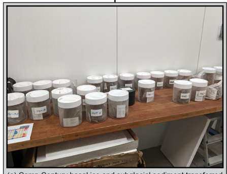
Factual boundary: Archive preservation concept; exact rediscovery date is source-conflicted and must not appear.
Prompt / production brief
G24: The sample came from below the ice
Exact narration cue: ancient ground · CC07-S4-CH08-B01
IMAGEGEN_REFERENCED_ILLUSTRATION · PREPARATION_READY_REFERENCES_REVIEWED_OUTPUT_NOT_GENERATED
A large, clear conceptual close-section of ice transitioning to frozen basal sediment at the ground interface. Grounded brown-grey granular material follows the actual core interior. Avoid recognizable plant species, invented fossil forms, numerical ages or a claim that the sample came from a camp room or meltwater.
Factual boundary: Conceptual material origin; not a fabricated scientific specimen photograph or microscopy image.
Prompt / production brief
D20: Actual modern archive photograph
Exact narration cue: moved between institutions · CC07-S4-CH08-B01
AUTHENTIC_SOURCE_NO_IMAGEGEN · PREPARATION_READY_REFERENCES_REVIEWED_OUTPUT_NOT_GENERATED
Use the modern Copenhagen sample-storage photograph, author credit and publication context. Do not label the photo1966 or attach an exact rediscovery date.
Factual boundary: Storage history in the caption is not the photo capture date.
Prompt / production brief
C14: Two very different depth statements
Exact narration cue: at least one hundred feet · CC07-S4-CH08-B03
DATA_LOCKED_CHART_NO_IMAGEGEN · PREPARATION_READY_REFERENCES_REVIEWED_OUTPUT_NOT_GENERATED
Build an editable restrained diagram from the exact narration categories or supplied data. Keep labels short, readable and geometrically stable; use physical/geographic context instead of dashboard cards.
Factual boundary: Different dates and different objects. Use inequality callouts with source context, NOT finite bars implying exact depths or a single measured simultaneous profile.
Prompt / production brief